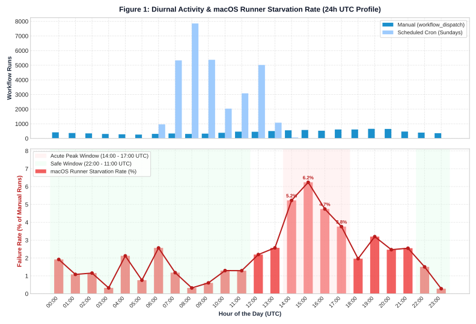
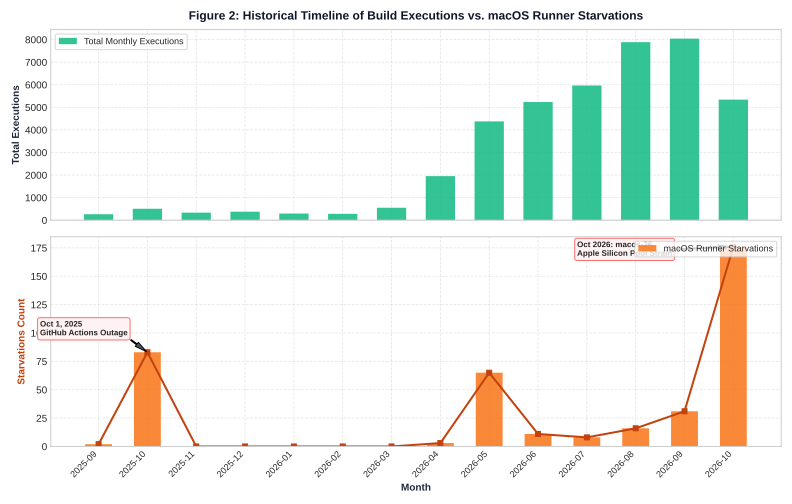
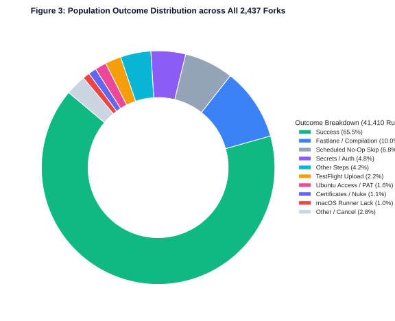
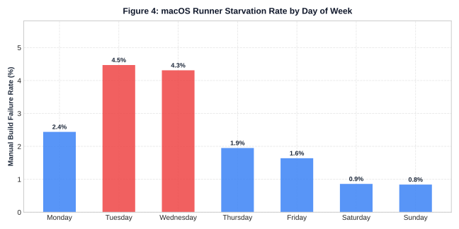

nightscout/Trio ecosystem (2024–2026).
The Trio DIY automated insulin delivery app utilizes GitHub Actions to compile native iOS binaries on cloud-hosted macOS virtual machines (such as macos-14, macos-15, and macos-26). Because thousands of users fork the upstream repository to build and sign personalized TestFlight installations, this ecosystem serves as a large-scale natural experiment on the availability, queue contention, and diurnal failure patterns of GitHub's macOS hosted runner fleet.
This investigation performed an exhaustive 100% census of all 2,437 public forks of nightscout/Trio, analyzing 41,410 individual executions. All 14,269 non-successful runs were inspected at the individual job, step, runner ID, and check-run annotation level to distinguish between normal Fastlane/signing failures and true macOS runner capacity exhaustion.
A rigorous breakdown of manual build dispatches (workflow_dispatch) demonstrates a pronounced diurnal congestion curve driven by global developer working hours:

Tracking runner starvations across the 2-year timeline reveals two major inflection points in GitHub Actions macOS infrastructure:

macos-26 (Xcode 26). The smaller M-series runner pool caused a sharp resurgence in queue timeouts, producing 176 runner-lack failures (44.5% of all runner failures in project history) and frequent capacity warnings.
The 14,269 non-successful runs fall into distinct operational categories. While runner starvation is a significant infrastructure bottleneck, Fastlane signing, compilation, and secrets misconfiguration remain the leading causes of overall build failure:

| Classification | Runs | % of Failures | % of All Runs | Root Cause / Mechanism |
|---|---|---|---|---|
| Successful Build | 27,117 | — | 65.48% | Compilation, archiving, and TestFlight release completed |
| Fastlane Archive / Xcode Compilation | 4,154 | 29.11% | 10.03% | Compiler errors, Swift version divergence, missing submodules |
| Scheduled No-Op Skip | 2,817 | 19.74% | 6.80% | Normal Sunday skip via cancel_when_no_build on Linux |
| Fastlane Secrets Validation | 1,987 | 13.93% | 4.80% | Missing or invalid App Store Connect API keys / PATs |
| Miscellaneous macOS Steps | 1,745 | 12.23% | 4.21% | Bundler gems, CocoaPods, patch application, or time sync |
| TestFlight Upload Failure | 914 | 6.41% | 2.21% | Transporter timeouts, 2FA prompt, App Store downtime |
| Ubuntu Access / PAT Failure | 653 | 4.58% | 1.58% | Fork lacks valid token to sync upstream repository |
| Distribution Certs / Nuke | 458 | 3.21% | 1.11% | Match certificate revocation or provisioning profile renewal |
| macOS Runner Starvation | 395 | 2.77% | 0.95% | Capacity exhaustion (runner_id: 0, unacquired hosted runner) |
| Other / Manual Cancel / Startup | 1,146 | 8.03% | 2.77% | Manual abortion, branch conflict, or GitHub Actions startup drop |

Despite Sunday representing 73.5% of all project runs (30,448 executions), it exhibits the lowest failure rate across the entire week (0.25% overall, 0.84% manual).
check_status) on ubuntu-latest. If there are no new commits upstream and it is not the designated monthly build day, the job cleanly terminates itself via cancel_when_no_build on Linux. Consequently, thousands of Sunday runs never enter the expensive macOS runner queue, insulating users from runner pool depletion.
Conducting an exhaustive census across thousands of independent repositories requires balancing data depth, transactional integrity, and strict adherence to GitHub API rate limits and abuse prevention policies. Below is the detailed architecture and execution methodology used in this study.
The study was conducted in two coordinated phases:
runner_id: 0 metadata).nightscout/Trio (2,437 unique repositories) and extracting all 41,410 historical Build Trio workflow runs.GitHub enforces a strict primary quota of 5,000 authenticated requests per rolling hour, alongside automated anti-abuse / secondary rate limit detection (which penalizes rapid bursts or excessive concurrent TCP connections). To ensure continuous, non-disruptive execution without triggering secondary 403 or 429 lockouts, we used a two-tier throttling architecture:
| Collector Stage | Concurrency | Pacing / Inter-Request Delay | Throughput | % of Quota | Purpose & Operations |
|---|---|---|---|---|---|
Phase 1: 12-Hour Smear Daemoncensus_collector.py |
1 Worker (Single-Threaded) | 4.2s sleep ± 0.4s randomized jitter | ~830 – 850 req / hr | ~16.8% | Gentle overnight collection: indexed all 2,437 forks, captured all 41,410 runs, and inspected initial 5,910 failures. Jitter ensured human-like non-periodic traffic. |
Phase 2: Accelerated Collectorfast_census_collector.py |
8 Workers (Thread Pool) | Centralized Token-Bucket Limiter (0.95s min aggregate delay) | ~3,600 – 3,780 req / hr | ~75.0% | High-throughput accelerated inspection of remaining 8,358 failures across 2 rolling rate windows, staying well below the 5,000/hr cap. |
X-RateLimit-Remaining and X-RateLimit-Reset from response headers. If the remaining quota dipped below 80 requests in any rolling hour, all worker threads were automatically placed into a synchronized sleep state until X-RateLimit-Reset + 5.0s, resuming automatically once GitHub restored the full 5,000 allowance. In addition, an exponential backoff handler intercepted any transient 403/429 responses.
To guarantee zero data loss over multi-hour runs, all state was stored in a local SQLite database (census_trio.db):
PRAGMA journal_mode=WAL; PRAGMA synchronous=NORMAL; to eliminate database locking issues between concurrent worker threads and allow seamless real-time querying while collecting.workflow_dispatch) and runs with positive queuing delays (queue_duration_mins > 0) were processed first, ensuring capacity drops were surfaced rapidly before batch scheduled runs.Every one of the 14,269 non-successful workflow runs was categorized using a deterministic step-by-step diagnostic tree:
| Classification | Diagnostic Rule / Matching Logic |
|---|---|
| Lack of macOS Runner |
1. Job targeted a macOS runner label (macos-26, macos-15, macos-14, xcode-27) AND status was cancelled, failure, or timed_out;2. AND ( runner_id == 0 OR runner_name == "" with empty step list steps: []);3. OR Check-run annotations explicitly contained "The job was not acquired by Runner of type hosted even after multiple attempts" or "Due to capacity constraints, jobs targeting macOS arm64 runners may experience longer queue times."; 4. OR Job failed at step Set up job with host provisioning failure.
|
| Scheduled No-Op Skip | Job Cancel run when there is nothing to build has conclusion cancelled AND the subsequent Build job was skipped. (Normal Sunday no-update cancellation; excluded from failure totals). |
| Fastlane Archive / Xcode | Step Fastlane Build & Archive failed with exit code 65, 70, or compiler error. |
| Secrets & Auth Failures | Step Validate Fastlane Secrets or Validate Access Token failed due to missing or expired API keys or Match passwords. |
| TestFlight Upload Failure | Step Fastlane upload to TestFlight failed during Apple Transporter delivery. |
In accordance with research ethics and data protection standards:
data/ folder is published purely in aggregate formats (hourly 24h bins, day-of-week sums, monthly trends, and failure category counts).ubuntu-latest pre-check. Running pre-flight checks on Linux prevents forks from congesting macOS pools during weekly automated checks.